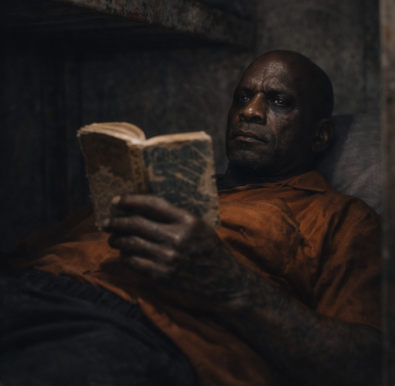
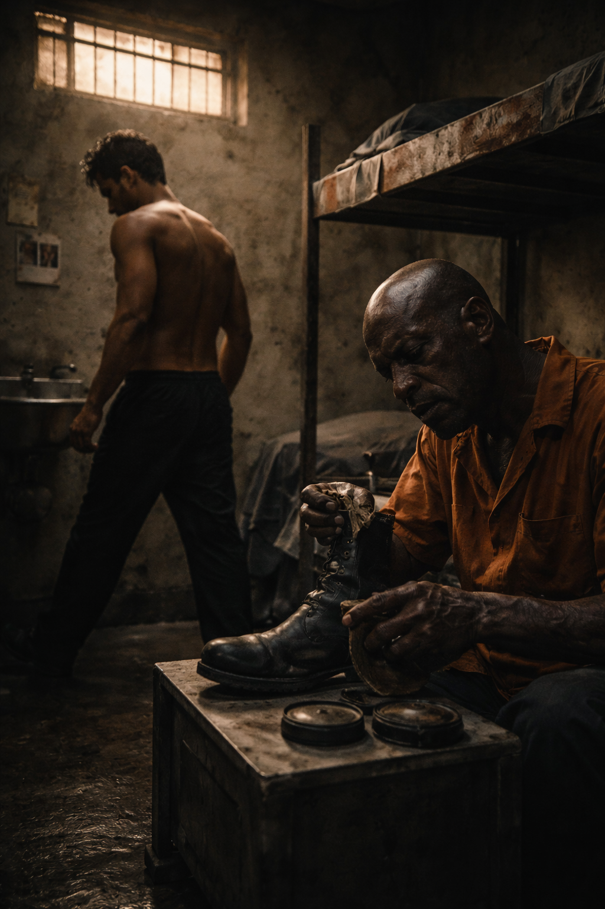

The concrete walls of Unit D didn't just hold the heat; they magnified it, baking the three hundred men stacked inside like meat in a pressure cooker. It was the kind of heat that made the air thick and hard to swallow, tasting of bleach, black mold, and the sour, fermented sweat of men who had nowhere to run. I lay on the top bunk, staring at a water stain on the ceiling that looked like a map of a country that didn't exist. My legs were cramping, a dull ache that wouldn't go away, but I didn't move. In here, movement attracted attention, and attention was the most dangerous currency you could hold.
Below me, the springs groaned. Doom was awake. He was always awake. I wasn't sure the man actually slept; he just entered a state of low-power observation, like a reptile waiting on a rock.
"You're breathing too loud, India,"
Doom rasped. His voice sounded like gravel being crushed under a boot. "You sound like a radiator about to blow."
"It's the heat,"
I whispered, keeping my eyes on the stain.
"It ain't the heat,"
Doom said, flipping a page of his book. The sound was sharp in the heavy silence of the cell. "It's the waiting. The waiting is what eats you. The fight happens in ten minutes or ten years, it don't matter. You're already fighting it in your head, burning up energy you're gonna need."
I rolled over and looked over the edge. Doom was lying on his back, holding a tattered paperback with a cover so worn the title was gone. He was an ancient thing, carved out of the prison itself. His skin was the color of old mahogany, tough and scarred, and his eyes were black pits that absorbed the light. He'd been in here since before the internet, before cell phones, before the world outside had sped up and left this place behind. He called me India because on my first day, when the intake guard asked where I was from, I'd mumbled something about not belonging here, and Doom had said, 'You look like you're lost in a foreign country, kid. You look like India.' The name stuck. Names always stuck in here. They were the only things you truly owned.

"He was watching me in the yard again,"
I said, the words tasting like ash.
Doom finally lowered the book. "Grunt watches everything. He's a shark in a goldfish bowl. He's gotta keep moving, keep scaring people, or he remembers he's just another number in a cage."
Grunt. The name was a joke that wasn't funny. He was a creature of pure intimidation, a towering slab of muscle that stood six-foot-five and blocked out the sun. He wasn't just big; he was dense, packed with the kind of violence that felt inevitable. His head was shaved clean, shining under the yard lights, and his skin was a tapestry of prison ink — jagged tribal bands, skulls, weeping angels, and words written in script too fancy for the violence they promised. He had a silver ring through his septum like a bull, and when he breathed, you could hear the air whistling through it.
He ran the D Block. Not officially — the guards ran the block — but Grunt ran the fear. And for the last three weeks, he had decided I was his next project.
It hadn't been a sudden thing. It was a slow suffocation. It started in the chow hall. I was carrying my tray, plastic warped from a thousand washes, looking for a patch of empty table. Grunt had been sitting with his crew, the Aryan Brotherhood guys who used silence as a weapon. As I passed, Grunt's leg shot out. Not a trip. A barrier. A toll gate.
I had stopped, the lukewarm water they called soup sloshing onto my thumb. Grunt looked up, his eyes dead and flat, like a shark's eyes rolling back. He didn't say a word. He just smiled, revealing a row of teeth that were rotting at the gums and one shiny silver cap that caught the fluorescent light. He tapped the table in front of him. He wanted my cornbread.
I gave it to him. I put it on the table, head down, and walked away. I thought I was paying a tax. I thought I was buying safety.
"You fed the beast,"
Doom had told me that night. "You don't feed the beast, India. Now he thinks you're the vending machine."
Doom was right. He was always right. After the cornbread, it was the yard. Grunt would shadow me, walking three paces behind, close enough that I could smell the stale tobacco and unwashed skin, but far enough that the tower guards wouldn't call it menacing. He would whisper things. Graphic things. Things about what he was going to do to me when the lights went out, or when we found a blind spot.
Now, the blind spot had been found.
"Laundry,"
I said to Doom, swinging my legs down from the bunk. My bare feet hit the cold concrete. "Behind the dryers. After count."
Doom sat up. He closed his book gently, treating it with more respect than he treated any living person in this place. "Laundry is good. It's loud. Steam covers the blood. Slippery floor though. Watch your step."
"That's your advice? Watch my step?"
Doom stood up. He wasn't a tall man, but he carried a weight that made him feel heavy. He walked over to me and grabbed my chin, his fingers like steel pincers. He forced my head up, making me look into those deep, dark eyes.
"Listen to me," Doom hissed. "You're an engineer, right? That's what you told me. You like numbers. You like systems."
"Yeah," I said, my voice shaky.
"Then stop looking at Grunt like a monster. Monsters are fairy tales. Monsters are scary because they don't make sense. Grunt makes sense. He's just physics, India. He's mass times acceleration. That's all." Doom let go of my face and tapped his own temple. "He's got rocks in his fists, but he's got slop in his head. He's angry. Anger makes you stupid. It makes you blind. He wants to crush you. He wants to hurt you. That's his plan. What's yours?"
"Survival," I said.
"Wrong," Doom snapped. "Survival is what you do when you run away. You can't run in the laundry room. There's three walls and a line of men who want to see you bleed. You ain't surviving tonight. You're solving a problem. The problem is a three-hundred-pound man who leans too heavy on his front foot."
We spent the next hour in silence, the kind of silence that screams. I paced the cell, three steps forward, three steps back. Doom polished his boots. He had a way of making the mundane look like a ritual. Every swipe of the rag was precise. He was teaching me, even when he wasn't talking. Focus on the small thing. Control what you can touch.

When the buzzer sounded for the evening rec period, my stomach dropped to the floor. The metal doors of the cells slid open with a synchronized clank-whoosh that echoed down the tiers like a gunshot.
"Time to go to work," Doom said. He didn't look at me. He just walked out onto the gantry.
The walk to the laundry sector felt like a march to the gallows. The prison was alive tonight. The energy was different. Word had spread. In a place where nothing ever happens, violence is the only entertainment. I could feel eyes on me from the upper tiers. Men leaning over the railings, whispering. Betting. I wondered what the odds were. I wondered if anyone was betting on me, or if they were just betting on how long I'd last.
"Don't look at them," Doom said, his voice low, walking right beside me. "They're just noise. Static on the radio. Tune it out."
We passed through the checkpoints. The guards looked bored. One of them, a heavy-set man named Miller who usually checked passes, just waved us through. He knew. They all knew. As long as nobody died and nobody tried to go over the wall, they let the pressure valve release. It kept the riot counts down.
The laundry room was at the end of the D Block corridor. As we got closer, the air got hotter, wetter. The smell of industrial detergent was suffocating, a chemical lemon scent that tried to cover up the stench of a thousand dirty jumpsuits. The noise was deafening — the rhythmic thump-thump-thump of the massive dryers, the hiss of steam presses, the clatter of carts.
We rounded the corner past the folding tables, into the back alcove where the old generators hummed.
They were already there.
It was a wall of bodies. Thirty, maybe forty men. The Aryan crew. The Latin Kings. The neutrals who just wanted to see a train wreck. They had formed a tight circle, leaving a patch of concrete in the middle about ten feet wide. It was slick with condensation.
When I stepped through the gap in the crowd, the noise dropped. Not the machines — they kept thumping — but the men. The talking stopped. They looked at me with that hungry, dead-eyed stare.
And there he was.
Grunt was stripping off his shirt. His back was a landscape of muscle and scarring. He turned slowly, theatrically. He wanted this to be a show. He wanted them to see the monster. He rolled his neck, the vertebrae popping loud enough to hear over the dryers. He flexed his hands, opening and closing them. They were the size of hams.
He looked at me and grinned. It was the same grin from the chow hall, but bigger now. Hungrier.
"School's out, little man,"
he boomed. His voice bounced off the metal walls. "Time for your final exam."
I stood there, feeling small. I was wearing my standard issue blues, and they felt too big for me. I felt like a child wearing his father's clothes. My hands were trembling. I shoved them into my pockets to hide it, but then I remembered Doom's advice. Don't hide. Stand.
I took my hands out. I made fists.
Doom stepped up behind me. He didn't touch me, but I could feel his heat. "Breathe," he whispered. "He's gonna come out fast. He wants to end it in the first ten seconds. He wants the highlight reel. Let him spend his money. You keep yours in the bank."
Grunt stepped into the circle. The crowd tightened. The air felt electric, charged with the static of imminent violence.
"Come on then!" Grunt roared, slapping his chest. The sound was like a wet whip crack. "Don't be shy, India! Come get your lesson!"
He didn't wait. He didn't circle. He launched.
It was terrifying. Seeing a man that size move that fast. He covered the distance in two strides, the concrete floor shaking under his boots. He looked like a collapsing building falling toward me. His right arm was cocked back, a wrecking ball ready to swing.
The fear spiked — a hot, white needle in my brain. My instinct screamed at me to curl up, to cover my head, to turn away.
But somewhere under the fear, a gear turned. A switch flipped.
Mass × Acceleration.
He was coming too fast. He was leaning too far forward.
I watched his feet. His right boot stomped down, heavy, committing all his weight.
I didn't think. I just obeyed the physics. I dropped my level, bending my knees, and stepped sharp to the left.
Grunt's fist punched the air where my head had been a microsecond ago. The wind of it slapped my ear. He was moving so fast he couldn't stop. He stumbled past me, his momentum carrying him toward the crowd.
The men shouted, shoving him back into the circle.
Grunt spun around. The grin was gone. Confusion replaced it for a second, then pure, unadulterated rage. He wasn't used to missing. He wasn't used to the rabbit moving.
"You slippery little rat," he spat, wiping spittle from his chin.
He reset. He raised his hands this time, tucking his chin. He was learning. That was bad. A smart monster is worse than a wild one.
"Watch the left," Doom's voice cut through the noise.
Grunt stalked forward. He threw a jab — quick, testing. It grazed my shoulder. It felt like being hit with a hammer. My arm went numb. If that was just a tap, a real hit would break bones.
He threw another. I blocked it, and the impact rattled my teeth.

The crowd was baying now. "Kill him! Smash him!"
Grunt cornered me against the generator cage. The metal mesh dug into my back. There was nowhere to go. The heat from the machine was burning through my shirt. Grunt saw the trap. He smiled again. He planted his feet, winding up for a body shot that would rupture organs.
I looked at his eyes. They were wide, fixated on my ribs. He wasn't looking at my face. He was looking at the target.
Tunnel vision.
He pulled back. His ribs opened up. He raised his elbow too high.
I stopped shaking. The world slowed down. The thumping of the dryers synced with my heart. Thump. Thump. Thump.
I saw the line. I saw the opening. It was small, a window closing fast, but it was there.
Grunt swung.
I didn't block. I stepped into him. Into the danger. Into the fire.
I drove my forearm up, aiming not for his face, but for the space under his chin, right where the beard ended and the throat began.
The collision was imminent. The air between us compressed. I gritted my teeth, braced my legs, and threw everything I had into the counter-move.